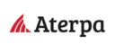
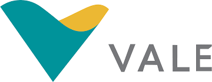
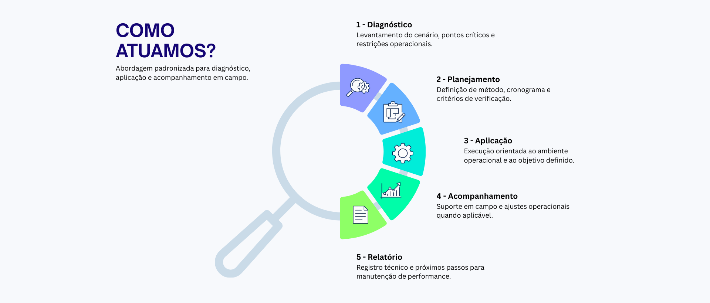

1
Padronização técnica
Métodos definidos conforme cenário operacional, reduzindo variabilidade em campo.
Estrutura técnica orientada à operação, controle e suporte em campo.
Métodos definidos conforme cenário operacional, reduzindo variabilidade em campo.
Aplicação assistida, regulagem e acompanhamento conforme necessidade do projeto.
Relatórios técnicos e rastreabilidade operacional para maior previsibilidade.
Referências para as maiores empresas do Brasil.




Levantamento do cenário, pontos críticos e restrições operacionais.
Definição de método, cronograma e critérios de verificação.
Execução orientada ao ambiente operacional e ao objetivo definido.
Suporte em campo e ajustes operacionais quando aplicável.
Registro técnico e próximos passos para manutenção de performance.
Envie seu cenário e retornamos com a melhor rota de ação.